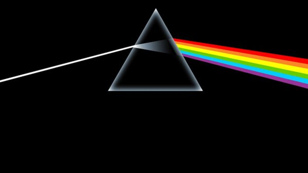
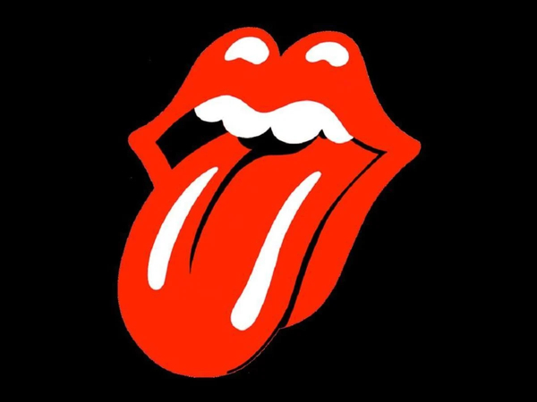
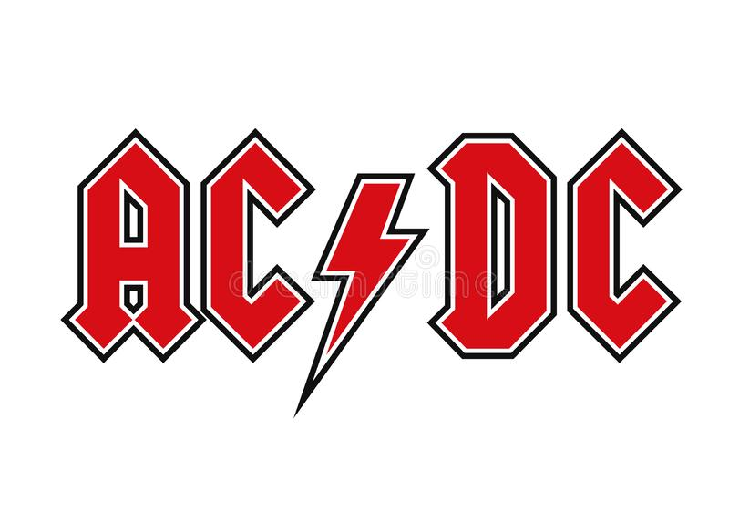
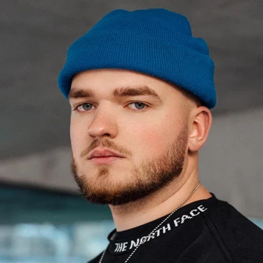

Nuestros artistas
Pink Floyd

Es una banda de rock británica, fundada en 1965. Considerada un ícono cultural del siglo XX y una de las bandas más exitosas en la historia de la música popular, con gran popularidad dentro del underground gracias a su música psicodélica y espacial, que evolucionó hacia el rock progresivo y el rock sinfónico.
Rolling Stones
Es una banda británica de rock and roll, R&B y blues, treinta álbumes de estudio y más de veintiséis discos recopilatorios, veintiocho álbumes en vivo, más de cien sencillos, tres EP, y siete box sets.kins y Ry Cooder. se formó en 1962 en Londres, Inglaterra por el multi-instrumentista Brian Jones, el cantante Mick Jagger, el guitarrista Keith Richards, el pianista Ian Stewart, el bajista Bill Wyman y el baterista Charlie Watts.

AC/DC

Es una banda de hard rock británica-australiana, formada en 1973 en Australia por los hermanos escoceses Malcolm Young y Angus Young. Sus álbumes se han vendido en un total estimado de 200 millones de copias,34 embarcándose en giras multitudinarias por todo el mundo.
Dynoro
Es un DJ y productor lituano orientado al Future House y Deep House. Es muy conocido por su sencillo "In My Mind" con Gigi D'Agostino. Dynoro comenzó a lanzar pistas y remixes en Soundcloud y Spotify en 2013. En diciembre de 2017, se lanzó su canción "In My Mind". Fue un mashup de la canción de Ivan Gough, Feenixpawl, Georgi Kay de 2012 y el sencillo de Gigi D'Agostino "L'amour toujours" de 2001. La canción se ha convertido en un éxito masivo en toda Europa e internacionalmente.
Gaullin

Comenzó a lanzar sencillos en Soundcloud en 2017 . En el verano de 2018 se lanzó el sencillo Moonlight , una versión cover de la canción del mismo nombre del rapero estadounidense XXXTentacion , fallecido unos meses antes. Gaullin ya había producido el título antes de su muerte, pero no se publicó hasta unas semanas después.
Skrillex
Es un DJ, productor, multiinstrumentista, director de videoclips, compositor y músico estadounidense. El artista es mayormente conocido por sus sencillos Bangarang Purple Lamborghini, First Of The Year, Scary Monsters and Nice Sprites y Where Are Ü Now.